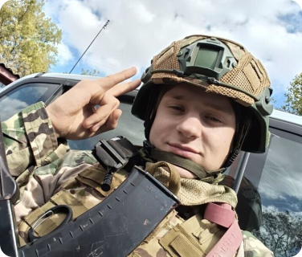
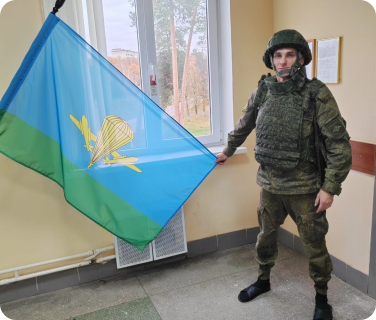
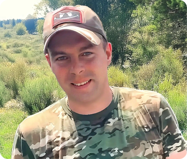
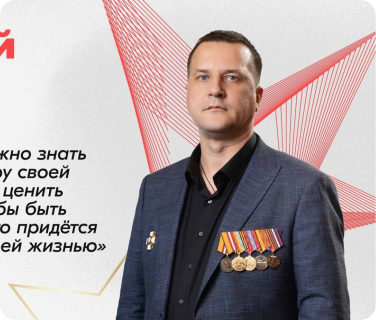
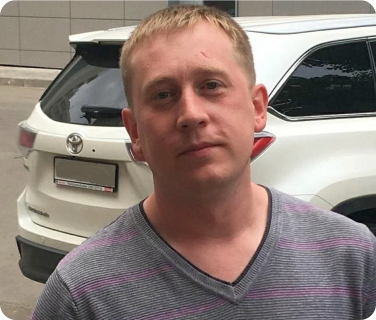
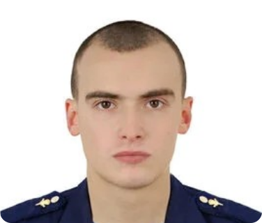

с позывным "Родной" управляет роем "птичек" на фронте и не любит телекамеры. В свои 23 года наш земляк - один из самых молодых Героев России, командир отряда БПЛА в...
Читать полностью
Сергей родился 8 августа 1994 года в посёлке Пушкино Тульской области. Любовь к Родине и к родной земле в юноше, выросшем в непростые 90-ые годы, всегда была в сердце. В семье...
Читать полностью
родился 13 сентября 1993 года в городе Пушкино Московской области. Получил основное общее образование в школе №8 города Пушкино. Проходил срочную службу во...
Читать полностью
- многодетный отец и доброволец, СВО. До того, как он принял решение отправиться в зону специальной военной операции, Виталий был индивидуальным предпринимателем и...
Читать полностью
Егор закончил Шаховской лицей №7 в 2006 году, был в Чечне, осенью 2022 года пошёл добровольцем на Украину. Егора не стало 20 декабря 2022 года, родные и близкие узнали об этом толь...
Читать полностью
родился 30 сентября 1998 года в городе Красногорске Московской области. Веселый, добродушный, общительный, очень любознательный и воспитанный парень с детсва увекался историей,...
Читать полностью